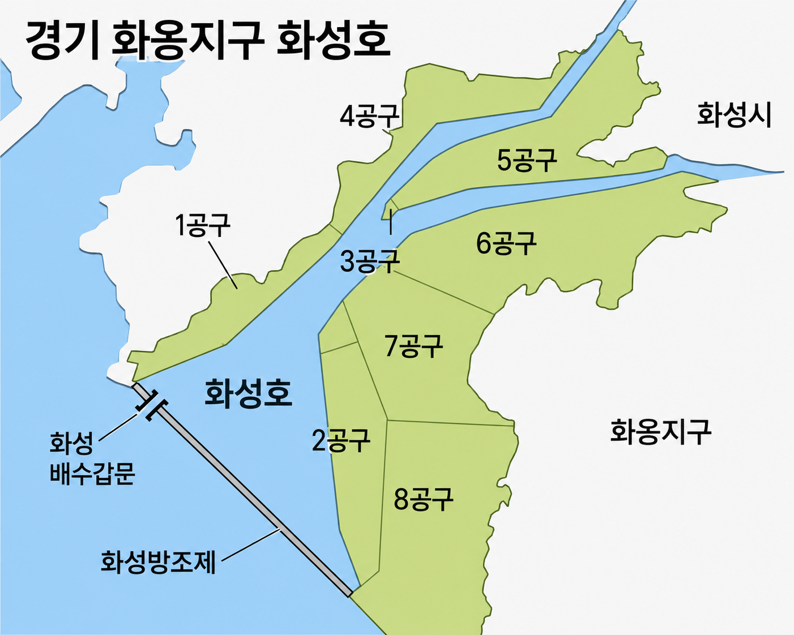

Hwaseong Hwaong Western Development Council
경기남부 국제공항 화옹지구 유치를 위해 결성된 비영리 시민 협의회입니다.
화옹지구 주민과 화성시민의 균형 발전 및 미래 세대의 경제적 기회 확보를 위해
정책 제안·자료 발간·청원 활동을 이어가고 있습니다.
지난 20여 년간 개발이 정체된 화옹지구의 교통·산업·정주 인프라 불균형 문제를 해결하고, 경기남부 국제공항의 조속한 화옹지구 입지 확정을 추진하기 위해 결성된 비영리 시민 협의회입니다.
화옹지구 현장 여건, 교통 접근성, 산업·환경 영향을 실증적으로 조사·분석하여 정부와 지자체가 합리적 결정을 내릴 수 있도록 공공적 자료를 제작하고 정책 제안서를 제출합니다.
제7차 공항개발 종합계획(2026~2030) 반영, 사전·예비타당성 조사 조기 착수, 관계기관 공동 공론화위원회 구성 등 단계별 실행 로드맵을 제안합니다.
국토교통부, 경기도, 화성시, 평택시, 수원시 등 관계 기관과 생산적·실질적 협의를 통해 지역 간 불균형 해소 및 서해안권 인프라 개선을 지속적으로 추진합니다.
경기도 화성시 서부 해안에 위치한 광역 간척지 기반 지역으로, 수도권 남부와 서해안권의 중심부에 자리한 전략적 요충지입니다. 서해안고속도로·수도권 제2순환고속도로·평택항·당진항 산업축과 인접해 있어, 국제공항·복합물류 허브·남부권 산업 지원거점으로 발전할 가능성이 매우 큰 지역입니다.

2025년 9월 창설 이후 화옹지구 공항 유치를 위한 주요 온라인 활동 기록